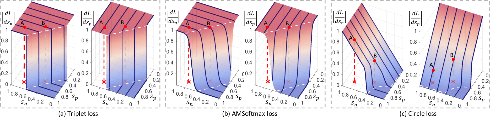
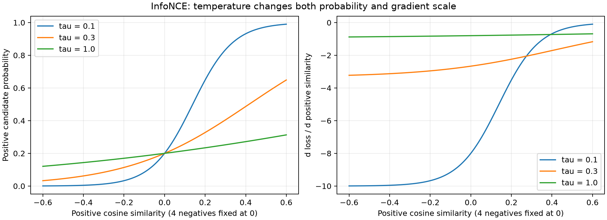
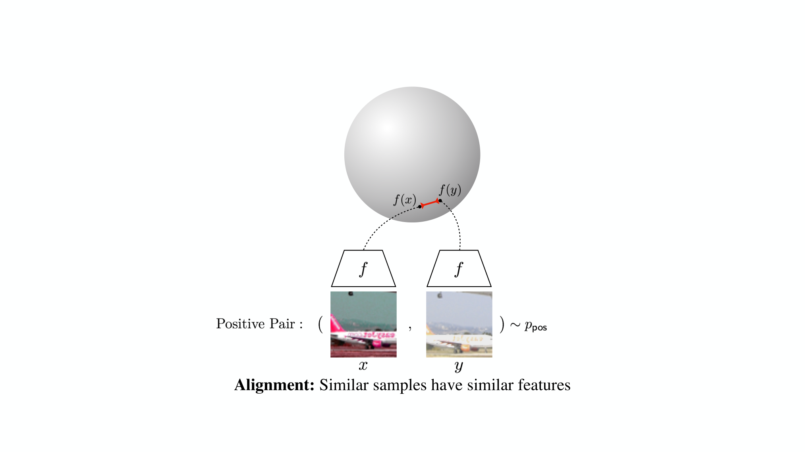
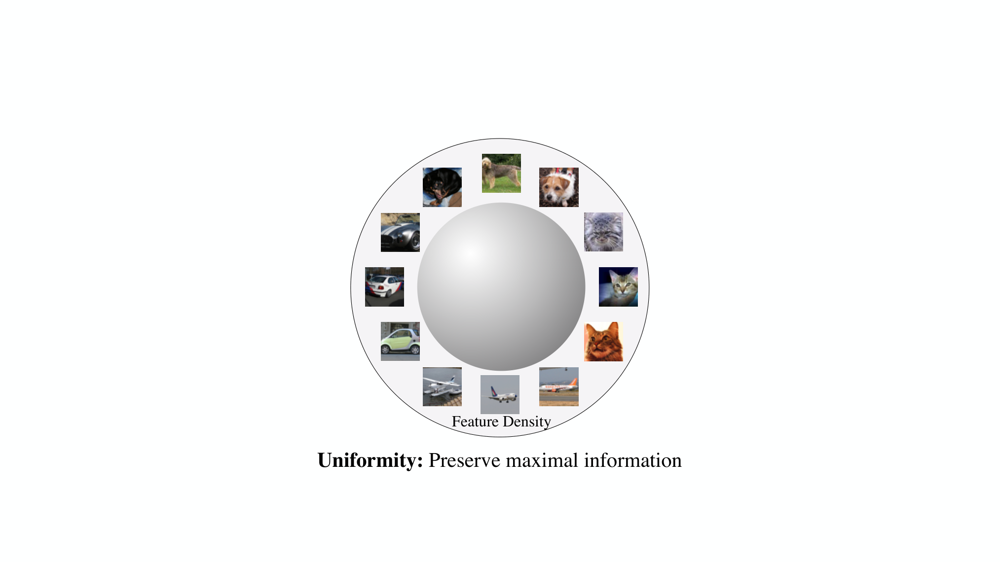
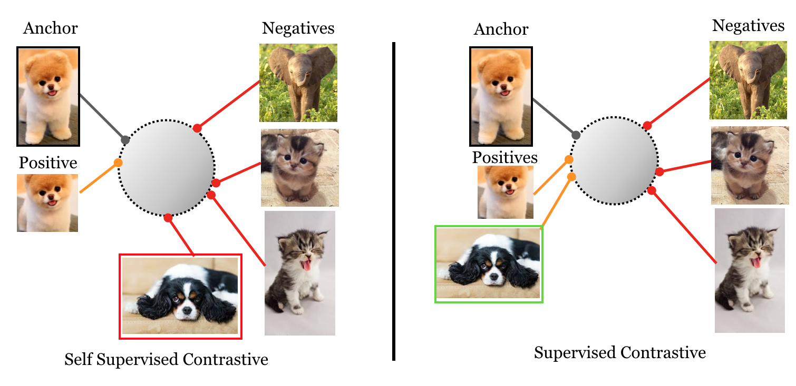
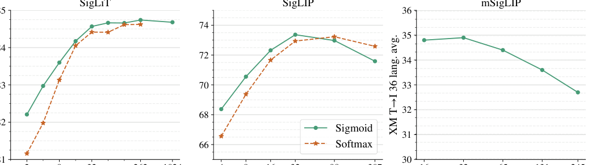

Embedding 损失函数精讲：度量学习、对比学习、排序与蒸馏¶
从“哪些样本应相近、哪些应区分”出发，系统解释 Embedding 损失的监督、候选、公式与梯度。度量学习、对比学习、分数回归和教师蒸馏分别约束什么，是本文贯穿的问题。
新增原始来源：SupCon · Circle Loss · CosFace · ArcFace · MRL。
相关论文：InfoNCE / CPC (Oord 2018) · N-pair loss (Sohn 2016) · Multi-Similarity Loss (Wang 2019) · Multiple Negatives Ranking Loss (Henderson 2017) · Triplet loss (FaceNet 2015) · Alignment & Uniformity (Wang & Isola 2020) · MoCo (He 2019) · SimCLR (Chen 2020) · SimCSE (Gao 2021) · DPR (Karpukhin 2020) · CLIP (Radford 2021) · SigLIP (Zhai 2023) · Margin MSE / TAS-B (Hofstätter 2020) · CoSENT (苏剑林 2022) · BGE-M3 (Chen 2024) · GritLM (Muennighoff 2024) · Vec2Vec (2025)
本文定位：把「向量检索/嵌入」用的损失函数按信号演化路径一次讲透 —— 从 N-pair/CPC 的候选分类结构，到 MNRL/SimCSE 在文本配对上的应用，到 CLIP 跨模态对称化，到 SigLIP 把 softmax 换成 sigmoid，到 BGE-M3 对 dense/sparse/multi-vec 三种表示分别训练并融合监督、Conan/RocketQA 把 CE 蒸馏到 BE。各部分围绕动机、数学式、样本与索引定义、适用条件及工程取舍展开；多条路线并行发展，不按“较新损失替代所有旧损失”理解。
配套：机制层面的模型深读在同目录的《无监督对比检索三部曲：SimCSE / Contriever / Condenser+coCondenser》《CLIP 详解》《SigLIP 与 SigLIP 2 详解》《E5 详解》《BGE-M3 三功能统一详解报告》。
从监督信号理解 Embedding 损失¶
Embedding 训练要决定什么关系应被保留：两个句子是否表达同一意思、一个段落是否回答查询、两张图是否为同一实例，或学生是否复现教师的排序。损失把这些监督变成对表示和参数的约束。仅比较公式名称还不够，同一公式配不同的标签、候选与采样，可能训练出用途完全不同的空间。
度量学习与对比学习如何区分¶
度量学习关注如何学习距离、相似度或嵌入，使相关样本更近、不相关样本更远，常用类标签、实例 ID 或相关性标注。它可以使用样本对、三元组、多个样本，或者用可学习的类别向量作为参照。
对比学习强调利用相匹配与不匹配关系构造学习目标，例如在候选中识别正例，或分别约束正负 pair。正例可以来自标注，也可以来自数据增强、同一对象的不同视图或上下文预测，因此对比学习既可自监督，也可有监督。
两者不是互斥的算法目录。Triplet、N-pair、MS、Circle 都可用于度量学习；N-pair 又具有候选分类式结构，SupCon 则将类标签与对比训练结合。还有两种容易混淆的用法：早期 contrastive loss 是特定的成对 margin 损失；今天说“contrastive learning”通常指更宽的训练方式，不能认为它们都等于 InfoNCE。
| 观察维度 | 要回答的问题 | 例子 |
|---|---|---|
| 监督是什么 | 类别、配对、三元组、连续分数还是教师信号 | 类别标签可用于 SupCon；相关性配对可用于 MNRL |
| 比较什么 | 距离、相似度、概率、相对间隔还是向量坐标 | Triplet 比距离差，KL 比候选分布 |
| 如何聚合 | 每个 pair、每个 triplet，还是整个候选池 | SigLIP 逐对 sigmoid，InfoNCE 候选 softmax |
| 正例有几个 | 每个 anchor 单正例还是多正例 | NT-Xent 通常一个正视图，SupCon 可有多个 |
| 谁贡献梯度 | 全部候选、挖掘后的 pair、冻结教师或 stop-gradient 权重 | MS 挖掘与加权；Circle 需明确权重的求导约定 |
| 最后如何归约 | 按 pair、正例数、anchor 或任务求平均 | 改平均方式可能改变不同类别和任务的权重 |
统一符号与候选集合¶
原始编码输出为 \(v=f_\theta(x)\)。需要单位球面表示时记 \(z=v/\|v\|_2\)，两个单位向量的点积就是余弦相似度。下面用 \(s_{ij}\) 表示相似度，\(u_{ij}=s_{ij}/\tau\) 表示送入 softmax 的 logit；\(D_{ij}=\|z_i-z_j\|_2^2\) 表示平方欧氏距离。归一化时有 \(D_{ij}=2-2s_{ij}\)，未归一化时不能直接套用。
对 anchor \(i\)，用 \(C_i\) 表示参与计算的候选索引，用 \(P_i\subseteq C_i\) 和 \(N_i\subseteq C_i\) 表示正负例。类别标签场景可由同类／异类划分；查询检索必须由查询—文档相关性定义，类别相同不自动意味着可以回答查询。全文局部章节可能用 \(B\) 表示匹配对数，也可能表示参与平均的 anchor 数，具体以该节定义为准。
候选索引不等于样本角色。 在 query×document 矩阵中，对角线常是匹配对；在同一批视图的相似度矩阵中，对角线则是自身匹配，需要排除。读到 \(j\ne i\) 时必须先确定矩阵两条轴是什么，不能仅凭不等号判断分母没有正例。
监督类型与目标函数的对应¶
| 已有监督 | 可以考虑的目标 | 关键条件 |
|---|---|---|
| 匹配对 \((q,d^+)\) | InfoNCE／MNRL、双向对比 | 需要构造可靠的竞争候选，处理同批假负例 |
| 同一样本的两种增强 | NT-Xent、其他自监督目标 | 增强不能破坏任务需要的语义或实例身份 |
| 类别／实例 ID | Contrastive、Triplet、N-pair、SupCon、MS、Circle、角度 margin 分类 | 每个 batch 的正例数量、类别定义与泛化协议都影响目标 |
| 连续相似度标签 | 相似度 MSE、CoSENT 等排序目标 | 先确定需要绝对分数校准还是只需要次序 |
| 教师相关性或向量 | KL、Margin-MSE、分数／向量蒸馏 | 候选一致、尺度明确，教师目标与任务相容 |
| 多维度／多表示输出 | MRL、多个头的任务损失及正则 | 这些多为基础损失的组合或约束，不是负例采样方法 |
“In-batch”“hard negative”“跨卡 gather”和“GradCache”主要改变候选、采样或执行方式，本身不唯一决定损失。反过来，改用 Circle 或 SupCon 也不会自动解决标签错误与全库挖掘问题。
一句话定位¶
嵌入质量由数据、骨干、表示读出、训练损失和样本组织共同决定。本文聚焦损失：InfoNCE 是候选分类式对比学习的重要形式，MNRL 是其常见的同批候选组织方式；Triplet、Multi-Similarity、SigLIP 和蒸馏等则具有不同目标，不能全部当作 InfoNCE 的改名。比较时先看下面几个坐标：
- 正对怎么来（数据/增强/挖掘）
- 负对怎么来（in-batch / MoCo queue / ANN hard neg / cross-GPU）
- 归一方式（softmax vs sigmoid vs margin）
- 损失方向与编码角色（是否平均 q→d、d→q；另行区分参数共享与输入模板）
- 附加信号（KL 蒸馏、Margin MSE、alignment 正则）
搞清这五条，才能在具体项目里判断「换个 loss 会不会掉、加不加 hard neg、用不用蒸馏」。
谱系导览¶
监督度量学习：根据类标签或明确的相关性组织样本对
├── Contrastive loss：正负 pair 的距离约束
├── Triplet loss：比较正例与负例的相对距离
├── N-pair loss：一个正例和多个负例的候选分类
├── Multi-Similarity loss：多个正负 pair 的挖掘与分别加权
└── Circle loss：按相似度的优化状态自适应加权
候选分类式对比学习：softmax 分母包括当前正例与负例
└── InfoNCE（CPC 中提出）
├── MNRL：batch 中其他配对文档提供负例
├── MoCo / SimCLR / SimCSE / Contriever：不同视图、字典与采样
├── NT-Xent：SimCLR 的两视图、排除自身的候选交叉熵
├── SupCon：类标签提供多个正例；单正例时可退化到 NT-Xent
├── DPR / ANCE / RocketQA：检索监督、难例挖掘与过滤
└── CLIP / ALIGN / OpenCLIP：图文双塔，常用两个方向的平均
其他监督和组合
├── SigLIP / SigLIP 2：逐对 sigmoid，而非候选 softmax
├── CoSENT：按标注顺序比较句对分数
├── Margin-MSE / TAS-B / RocketQAv2 / Jasper：分数或分布蒸馏
├── BGE-M3 / Conan-CBB / GritLM：多表示、多任务或生成与表示组合
└── BYOL / DINO：无显式负例的自蒸馏支线，不是标准 InfoNCE
表示与系统扩展：Late Chunking / Vec2Vec / 2D-Matryoshka
（需分别说明作用层次，不由名称推断为一种新对比损失）
后文按上面这条路径逐个展开。
度量学习：从样本对和三元组到多样本加权¶
Pair-based contrastive loss（Hadsell 2006）¶
给一对样本 \((x_1, x_2)\)，标签 \(y \in \{0, 1\}\)（1 表示同类）：
- \(d\) 通常是欧氏或余弦距离，\(m\) 是 margin。
- 直觉：同类越近越好，异类保持至少 \(m\) 的距离。
取舍：每个损失项只约束一对样本，但多个 pair 可以批量并行计算；学习信号取决于组对方式和 margin，不能将其描述成“一次前向只能算一对”。
Triplet loss（FaceNet 2015）¶
给 (anchor, positive, negative) 三元组：
- 每个三元组同时比较 anchor 的一个正例和一个负例，监督的是相对距离。
- FaceNet 用这个训人脸识别，取得 SOTA。
问题：
- 负例挖掘困难：随机负太易（loss 恒为 0），全 hard 又抖动。需要「semi-hard mining」的复杂流程。
- 信号利用取决于组法：单个 triplet 项只比较一个正例和一个负例；batch-all／batch-hard 等方法可利用更多组合，并非一次前向只能处理三个样本。
- margin 敏感：不同任务的 \(m\) 差异大，跨任务复用难。
Triplet 的梯度、距离尺度与采样¶
令 \(D_{ap}=\|a-p\|_2^2\)、\(D_{an}=\|a-n\|_2^2\)，单项为 \(\ell=[D_{ap}-D_{an}+m_D]_+\)。当括号内大于零时，按表示求导：
梯度下降将正例拉向 anchor、负例推离 anchor，anchor 的移动同时取决于两者；当间隔已满足时，该项梯度为零，边界处按实现选择次梯度。这里是表示变量的梯度，若前面还有归一化，仍需继续通过归一化的 Jacobian 反传。
| 负例类型 | 平方距离条件 | 对该 triplet 的作用 |
|---|---|---|
| Hard | \(D_{an}\leq D_{ap}\) | 负例至少和正例一样近，约束被明显违反 |
| Semi-hard | \(D_{ap}<D_{an}<D_{ap}+m_D\) | 排序正确但间隔不足，仍产生梯度 |
| Easy | \(D_{an}\geq D_{ap}+m_D\) | 此项已满足间隔，hinge 为零 |
Batch-hard 选择同 anchor 下最远正例与最近负例，batch-all 聚合所有有效组合。前者较聚焦，也容易选到错标、异常图或假负例；后者利用更多组合，但大量容易样本可能影响归约权重。FaceNet 的 semi-hard 策略是具体训练设计，不是所有 Triplet 实现必须采用的唯一规则。原始定义见 FaceNet。
归一化表示下：
所以平方距离 margin \(m_D\) 对应相似度 margin \(m_S=m_D/2\)，并多一个整体尺度 2。若改用未平方的欧氏距离，以上线性换算不成立；不同库中同名 margin=0.2 未必表达相同约束。
一种平滑版本是 \(T\log(1+e^{(D_{ap}-D_{an}+m_D)/T})\)，当 \(T\to0^+\) 时趋近 hinge。平滑后容易样本也可能有小梯度，但它仍是一个正负间隔项，并没有自动变成整个候选池上的 InfoNCE。
N-pair loss（Sohn 2016）¶
Triplet 的多负例扩展：一个正对 + \(N-1\) 个负对，softmax 归一：
这是在 \(N\) 个候选中识别当前正例的 softmax 交叉熵，其排序项也可写为 \(\log(1+\sum_n e^{s_n-s_+})\)。其中的 1 对应原分母的正例项；原文还有表示的 L2 正则，这里没有展开。它早于 CPC 的 InfoNCE，二者存在相关的代数结构，但采样、约束与原论文完整目标并不因此完全相同。
N-pair 如何利用一批样本¶
原始 multi-class N-pair 设计从 \(B\) 个不同类别各取一对样本 \((a_i,p_i)\)，共享其他类别的正例端作为负例，避免为每个 anchor 分别构建互不共享的大组。其排序部分为：
因此它并不是“只利用一个孤立 triplet”，也不是“一个 batch 只能算一个正对”。关键是多个类的候选共享。原论文还对表示范数施加正则，以限制仅靠放大向量范数降低排序损失；把表示单位化、加入温度、加入新 margin 都需要说明是何种实现，而不能当作原文默认步骤。N-pair 原论文
在“一个正例 + \(B-1\) 个竞争候选”、相同打分和尺度的条件下，这个排序项与 MNRL 的 softmax 形式代数一致；两篇工作的任务、样本构造及完整训练方案仍不同。同类多正例一旦进入 batch，就需重新定义 mask 或多正例目标，不能沿用“所有非对角线都不相关”的假设。
Multi-Similarity Loss：多正例、多负例的挖掘与加权¶
Multi-Similarity Loss with General Pair Weighting for Deep Metric Learning（Wang et al., CVPR 2019）属于监督式深度度量学习中的 pair-based 损失。它与 N-pair、Triplet 放在同一条问题线上理解：如何使用一个 anchor 周围的多个相关和不相关样本。它不是把多个相似度函数混在一起，也不是 InfoNCE 换个名字。
令 \(z_i\) 为 L2 归一化表示，\(S_{ij}=z_i^\top z_j\) 为余弦相似度。若类别标签可以定义任务相关性，先构造同类正例集合 \(P_i^0=\{j\ne i:y_j=y_i\}\) 与异类负例集合 \(N_i^0=\{j:y_j\ne y_i\}\)，再进行 mining → weighting 两步。
挖掘阶段比较正负两侧的相对难度，保留：
即正例不能比最像的负例远远更容易，负例也不能比最远的正例远远更容易。例如正例相似度是 0.8、0.4，负例是 0.5、0.1，取 \(\epsilon=0.1\) 时，选中正例 0.4 与负例 0.5。这里的数值仅用于说明规则，不是论文评测结果。若 anchor 缺少同类正例或异类负例，上述极值无法定义，应通过 batch 采样避免，或按实现约定跳过。
加权阶段对选中的样本对使用原论文 Equation 15：
其中 \(B\) 为参与平均的 anchor 数，\(\alpha,\beta>0\) 控制正负分支的尺度，\(\lambda\) 是相似度的软参考位置，\(\epsilon\) 是前一步挖掘的容差，二者作用不同。正例相似度越低，正分支中的指数项越大；负例相似度越高，负分支中的指数项越大。某个选中集合为空时，该分支为 \(\log 1=0\)。
在选中集合固定时，忽略外面的 batch 平均系数，梯度为：
梯度下降分别提高选中正例的相似度、降低选中负例的相似度；梯度幅度决定每个 pair 的权重。同一 pair 的权重既受自身分数影响，也受同一分支其他 pair 影响。论文所谓 Multi-Similarity 综合了自身相似度，以及与正例、负例的相对关系：正负间的关系用于挖掘，自身和同侧关系用于加权，并不是同时计算 cosine、L2、内积。
与 InfoNCE 的关键区别是正负分支分别聚合。InfoNCE 把当前正例和负例放进共同 softmax 候选池，回答“哪个候选是匹配项”；MS Loss 分别拉近多个正例、推开多个负例，并让挖掘和梯度权重选择有信息的 pair。MS 公式中两个分支的归一化项不能与 InfoNCE 的共同概率分母混为一谈。
在本文框架中，它接在 Triplet／N-pair 之后，属于“监督标签 → 多个正负样本对 → 挖掘与加权”的分支。类别标注、同实例图像、图搜图及有明确正负关系的文本度量学习都可以考虑；查询相关性不等于类别相同的检索任务，应按真实 qrels 定义 pair，不能直接把同主题文档都当正例。原论文实验是视觉度量检索，不能直接视为文本 RAG 中优于 MNRL 的证据。
实现可回查作者代码；参数使用具体实现的相似度尺度与默认约定，不能把它的 \(\lambda\)、\(\epsilon\) 当作 InfoNCE 的温度照搬。
Circle Loss：按每个相似度的优化状态调整权重¶
Circle Loss: A Unified Perspective of Pair Similarity Optimization（Sun et al., CVPR 2020）从度量学习的 pair 相似度出发。相对间隔目标常优化 \(s_n-s_p\)，对提高正例和降低负例施加对称的局部要求；Circle 则用不同权重分别调节二者，更多关注尚未充分优化的相似度。这里的 Circle 是圆形决策边界，不是“循环训练”。
从正负相似度差到自适应加权¶
对一个 anchor，令正例相似度为 \(s_p\)、负例为 \(s_n\)。一组常用参数化为：
\([\cdot]_+\) 为截断到非负，\(m\) 控制 margin，\(\gamma\) 为整体 logit 尺度。多个正负 pair 的单 anchor 目标为：
低相似度正例获得较大的 \(\alpha_p\)，高相似度负例获得较大的 \(\alpha_n\)。取说明性 \(m=0.25\)，\((s_p,s_n)=(0.9,0.6)\) 和 \((0.5,0.2)\) 的相似度差相同，但权重分别为 \((0.35,0.85)\) 与 \((0.75,0.45)\)：前者更侧重降低过高的负例，后者更侧重改善落后的正例。这个例子说明权重分配，不是性能实验。
为什么得到圆形边界¶
考虑一个正例和一个负例，且上述截断权重位于激活区。代入相似度，指数中的量为：
于是该量等于 0 的等值线为：
这就是 Circle 命名的几何来源。它讨论的是单对、激活区下的等值边界；完整多 pair 目标由 log-sum-exp 聚合，不能把任意 batch 的整个表示空间都理解为二维圆面。softplus 也是平滑目标，不像 hinge 一过边界就必然严格为零。
权重是否参与求导必须说明¶
常见成对实现会用当前分数计算权重，再对权重执行 stop-gradient，只让加权后的相似度反传。例如：
alpha_p = (1 + margin - s_pos.detach()).clamp_min(0)
alpha_n = (s_neg.detach() + margin).clamp_min(0)
logit_p = -gamma * alpha_p * (s_pos - (1 - margin))
logit_n = gamma * alpha_n * (s_neg - margin)
loss = softplus(logsumexp(logit_p) + logsumexp(logit_n))
代码是核心步骤的示意，省略了每个 anchor 的集合构造与空集合处理；与公开参考实现的权重分离约定一致，该仓库是参考实现，不将其标成官方代码。
在这一约定下，令 \(A=\operatorname{LSE}(\text{logit}_p)+\operatorname{LSE}(\text{logit}_n)\)，\(\pi_p,\pi_n\) 为各自分支的 softmax 权重，有：
梯度由整体难度、分支内相对分数和当前 pair 的自适应权重共同决定。若把 \(\alpha(s)\) 也当普通可微函数求全导数，会多出 \(d\alpha/ds\) 项，梯度不再是上式。用于解释前向数值的圆形展开，不能被直接全微分后当作 stop-gradient 实现的反向公式。

图中分别展示对正、负相似度的梯度幅度。前两种目标主要围绕相似度差安排更新；Circle 对两个方向分配不同幅度，使已经较好的正例与仍困难的负例不必承受相同更新。读图需区分梯度幅度与符号，图不表示所有任务上 Circle 都优于其他目标。
与 N-pair、SupCon、MS 的关系¶
将 \(\alpha_p=\alpha_n=1\)、\(\Delta_p=\Delta_n=0\) 固定，并且只有一个正例时，Circle 的形式退化为带尺度的 N-pair 排序项。多个正例时，它聚合正负间的多个组合，不能直接当作 SupCon outside-log 的平均。
MS 分别对正、负分支取 log 并相加；Circle 在一个 log 中耦合正负分支，并显式引入随当前相似度变化的权重。SupCon 则在共同候选概率中为各正例分配目标份额。这些区别都超过了“是否使用 cosine”或“是否有 margin”。
原论文同时讨论 pair-wise 标签与 class-level 标签；前者的参照是实际样本，后者可由类别权重提供类内／类间相似度。它们共享优化视角，但数据组织与分类器开销不同。在文本任务中采用 Circle 时仍需相关性、候选和标签依据，不能仅因它最初用于视觉身份任务就假定迁移有效。
两条相关路线：候选分类与样本对加权¶
N-pair、InfoNCE 和基础 MNRL 可以在共同候选 softmax 上理解，区别主要在正负样本来源、编码与训练设置。Multi-Similarity 则显式保留多个正负 pair，在挖掘之后分别加权。Triplet 和 pair-based 方法仍可用于实例检索等任务；应按监督结构与实验选择，而不是仅因出现时间更早就判为过时。
InfoNCE：在候选中识别正例¶
从 CPC 的信息论视角推导¶
CPC（Contrastive Predictive Coding，Oord et al. 2018）在潜在空间预测未来，并提出 InfoNCE 损失。给定上下文 \(c\)，从条件分布采一个正例 \(x^+\sim p(x\mid c)\)，从边缘分布独立采 \(K\) 个负例 \(x_k^-\sim p(x)\)；候选总数是 \(K+1\)。学习正值打分 \(f_\theta(x,c)>0\)，识别哪一项来自条件分布：
最优打分与密度比 \(p(x\mid c)/p(x)\) 成比例。按上述采样条件，互信息满足：
若用 \(N\) 表示总候选数，同一关系就是 \(\log N-\mathcal L_N\)。负例数和候选总数不能混用。降低损失可提高这个下界，但不表示真实互信息一定等量增加；实际检索采用条件化 hard negative 后，也不能不检查采样假设就直接套用该互信息解释。原始定义见 CPC 原文的 InfoNCE 部分。
落地形式：温度 + 余弦¶
在 embedding 场景里，令 \(h_i\) 为 anchor，\(h_i^+\) 为它的正例表示，\(h_j^-\) 为索引集合 \(\mathcal N_i\) 中的负例表示。标准写法明确列出两部分：
\(\mathrm{sim}\) 可为余弦或点积，需与模型训练及归一化约定一致；\(\tau>0\) 是温度。若改写为单个候选求和，候选集合必须包含正例，不能将集合里的每项都解释成负例。
\(\tau\) 是最容易被误用的超参：
- 在固定相似度尺度下，较大的 \(\tau\) 使候选概率更平滑，并缩小对相似度的梯度尺度；是否影响学习需结合数据和损失判断。
- 较小的 \(\tau\) 会放大所有相似度差，而不只放大正例；排序正确时可能饱和，错误高分负例仍可能产生强梯度。实现应使用稳定的
log_softmax／logsumexp，并留意噪声和假负例。 - 经验值：句向量 \(\tau=0.05\)；检索 \(\tau=0.01\)–\(0.02\)（正负分数差本身就大）；CLIP 用可学 \(\tau\)，初始化 \(\log(1/0.07)\)、上界 clip 到 \(\log 100\)。
为什么分母必须包含当前正例¶
标准 InfoNCE 的 softmax 概率定义在完整候选集合上。给定当前查询 \(q\)，记其匹配文档为 \(d^+\)，真正作为负例使用的集合为 \(\mathcal N(q)\)，则：
分母的含义是“所有候选的总权重”，而非“只有负例的总权重”。正例在分母中出现，是 softmax 归一化的一部分，不表示将它当负例推开。对温度缩放后的 logit \(u=s/\tau\) 求导：
因此梯度下降仍会提高当前正例的 logit、降低负例的 logit。若正例的指数权重为 4、两个负例各为 1，正例概率是 \(4/(4+1+1)=2/3\)。若漏掉分母的正例项，得到的 \(4/(1+1)=2\) 就不再是这个候选分类问题的概率。
这个关系也可从 N-pair 常用形式直接看出：
它与上面的负对数 softmax 代数等价，括号里的 1 就来自分母的正例项除以自身。N-pair 的原始排序项、CPC 的 InfoNCE 和基础 MNRL 都有这项结构；采样方式、特征约束、温度及原论文的额外正则则可能不同。
如果一个公式确实只对负例求和，既没有显式正例项，也没有等价改写后的 1，那便改变了损失。设 \(r=\sum_n e^{u_n-u_+}\)，标准 InfoNCE 为 \(\log(1+r)\)，仅负例分母对应 \(\log r\)；二者不是相差一个常数。后者可以用于专门的解耦目标，但不能不加说明地当作同一个标准 InfoNCE。
排除 anchor 自身也不等于排除正例。 SimCLR 的候选里有同一样本的两种视图，常写 \(\sum_{k\ne i}\) 排除 \(z_i\) 与自身的匹配；另一个正视图 \(z_{p(i)}\) 的索引不同，仍在分母内。MNRL 的 query×document 矩阵则通常用对角线表示匹配文档，对角线正是要保留的目标项。
从 softmax 交叉熵完整求导¶
固定当前 anchor，只看其候选集合 \(C\)。正例索引为 \(+\)，记 \(u_j=s_j/\tau\)、\(Z=\sum_{k\in C}e^{u_k}\)、\(p_j=e^{u_j}/Z\)。单项损失可展开为：
对任意候选 \(j\)：
再用 \(u_j=s_j/\tau\) 的链式法则：
这给出三个直接结论。第一，分母中的正例产生正向导数 \(p_+/\tau\)，但分子对应的 \(-s_+/\tau\) 同时产生 \(-1/\tau\)；两者相加仍非正，不能只看分母一项判断优化方向。第二，负例的梯度幅度随它在候选中的概率增大，因此高分负例获得更多注意。第三，当 \(p_+\approx1\) 时，这一行的全部梯度接近零，说明当前候选集合已容易区分，并不证明全库检索已完成。
上式将各个相似度视为独立变量来分析局部方向；实际网络共享参数，更新某个样本也会影响其他分数，因此不能承诺一次优化后所有正例相似度都单调上涨。
为什么 log-sum-exp 里有 1¶
对分子分母同时除以 \(e^{u_+}\)：
这个 1 不是人为加的数值稳定项，而是当前正例的归一化贡献。若只有一个负例，令 \(g=u_n-u_+\)，则 \(\ell=\operatorname{softplus}(g)\)，其对 \(g\) 的导数为 \(\sigma(g)\)。多负例版本则把多个分数差共同放入 log-sum-exp。
如果将正例从分母删除，得到 \(\tilde\ell=\log\sum_n e^{u_n}-u_+\)，有：
标准目标中的“正例已很有把握时减弱更新”这一耦合消失了。在未约束的 logits 上，\(\tilde\ell\) 还可随 \(u_+\to+\infty\) 降至负无穷；单位向量、固定温度下分数受限，但两种梯度仍然不同。专门的解耦对比方法可以研究这种变化，不能把它误写成标准 InfoNCE。
从分数继续反传到向量与编码器¶
若 \(s_j=q^\top d_j\)，当前行对表示的梯度为：
query 需要靠近匹配表示，并与当前概率较高的候选形成区分。若两塔共享参数，候选一侧的梯度也通过同一编码器累加；若采用双向损失，每个样本还会参与另一方向。单向损失并不意味着文档塔没有梯度。
若单位向量来自原始输出 \(v\) 的归一化 \(z=v/\|v\|_2\)，则：
归一化会移除径向分量，学习主要调整向量方向。它也解释了为何“对相似度的梯度是某常数”不代表各骨干参数的梯度相同。实际实现还要处理零范数，通常由归一化算子的 epsilon 保护。
温度如何同时影响分布与梯度尺度¶
温度一方面改变 \(p_j\)，另一方面显式乘上 \(1/\tau\)。因此不能仅凭“温度小，所以梯度一定大／一定小”判断：正确而容易的正例可能更快饱和，错误高分负例则可能获得很强更新。

该图由本文公式绘制，设一个正例、四个负例，负例相似度均为 0，横轴为正例相似度。左图为 \(p_+\)，右图为 \(\partial\ell/\partial s_+\)；不同曲线只改变温度。正例分数已经较高时，小温度下梯度更接近零；正例分数落后时，小温度下负梯度幅度更大。图是教学计算，不是某个模型的实验结果。
从矩阵和边界情况检查目标¶
| 情况 | 标准目标应有的行为 | 可定位的问题 |
|---|---|---|
| 所有 \(\lvert C\rvert\) 个候选 logit 相等 | \(p_+=1/\lvert C\rvert\)，\(\ell=\log\lvert C\rvert\) | 基线用总候选数，不能只用负例数 |
| 给同一行全部 logits 加同一常数 | 概率、损失与梯度不变 | softmax 使用相对分数，不应靠偏置整体下降 |
| 候选只有当前正例 | \(p_+=1\)，损失与梯度为 0 | 基础 MNRL 的单对、无额外候选情形没有区分信号 |
| 排除当前 query 的匹配文档 | 标签指向缺失候选 | 不是合法的基础 MNRL mask |
| 排除同一视图的自身匹配 | 正视图仍可保留 | NT-Xent 的对角线 mask 与 q×d 的对角线目标不同 |
| 负候选实为另一个相关文档 | 损失会压低它的当前得分 | 假负例需在数据或目标层处理 |
Wang & Isola：把 InfoNCE 拆成 alignment + uniformity¶
在论文采用的归一化表示等假设下，当负例数 \(K\to\infty\)，先去掉随候选数增长的常数 \(\log K\)，期望 InfoNCE 可分解为对齐项与分布项：
对应两个可测度指标：
\(\ell_{\text{align}}\) 越小 ⇔ 正对越紧；\(\ell_{\text{uniform}}\) 越小 ⇔ 表征越均匀分布在球面。

上图（SimCSE 论文 Figure 3）画的正是这个坐标系。三个诊断结论：
- BERT 直接出来 mean-pool 位于「对齐还行、均匀极差」的右上区——各向异性严重、cosine 相似度普遍偏高。
- 删词/替换 类离散增强会破坏对齐（正对被扰动到不同语义），\(\ell_{\text{align}}\) 变差。
- Dropout as noise（SimCSE） 同时改善两个指标——是无监督对比想要的样本。
这套分析工具直接影响了后续所有句向量论文：画不画 align-uniform 轨迹，成了「你懂不懂对比学习」的分水岭。
两个指标分别测量什么¶

图来自 Wang & Isola, ICML 2020：正样本对经过编码后，应在球面上靠近。这里的“正”来自指定的联合分布 \(p_{\mathrm{pos}}\)，可以是同一图像的两种视图，也可以是语义配对；这个定义是否符合目标任务，直接影响指标含义。
当 \(\alpha=2\) 且表示单位归一化时，alignment 还有等价表达：
它越低，指定正对平均越近。只优化它存在坍塌解：所有输入映射到同一个单位向量，alignment 就是 0，却无法区分文档。

第二幅原图强调总体表示分布需要充分使用球面，而不是挤在少数方向。uniformity 用高斯势能度量整体聚集程度：
它同样越低越好，数值通常为负。坍塌时所有距离为 0，uniformity 为 \(\log1=0\)；点分散后，多数核值小于 1，指标下降。这里的独立采样对不保证都是语义负例，也包含偶然同类的样本，因此不能把它简单称为“负例平均距离”。归一化向量的平方距离在 \([0,4]\)，相应有 \(-4t\le\mathcal L_{\mathrm{uniform}}\le0\)；下界只是逐对距离给出的粗界，不意味着所有点对能同时相距 4。
| 表示状态 | Alignment | Uniformity | 为什么不能单看一个指标 |
|---|---|---|---|
| 所有输入变成同一点 | 0，表面上最好 | 0，表示高度聚集 | 正例靠近，但检索能力消失 |
| 输入被映射到彼此分散的随机方向 | 正对未必靠近 | 可能较低 | 空间分散不等于保留任务语义 |
| 相关样本靠近，整体分布仍有区分 | 较低 | 较低 | 是期望方向，仍须用任务评估验证 |
为什么不能直接写成两个指标相加¶
上一段的大负例数极限说明了 alignment 与分布扩散的联系，但它的第二项是“先对候选求期望，再取 log，最后对 anchor 求期望”。令单位向量 \(z=f(x)\)、\(z'=f(y)\)，温度为 \(\tau\)，\(M\) 是 iid 边缘负例数。按原论文的渐近结论：
利用 \(z^\top z'=1-\|z-z'\|^2/2\)，两处常数抵消，得到：
但 uniformity 指标在 \(t=1/(2\tau)\) 时是：
一般有 \(\mathbb E\log A\ne\log\mathbb E A\)。由 Jensen 不等式，前一种分布项不大于后一种；只有在每个 anchor 周围的核期望相同等条件下才取等号。原论文讨论了球面均匀分布与最优解的联系，不能据此把任意模型、有限 batch、任意采样下的 InfoNCE 都写成“alignment 指标 + uniformity 指标”的精确恒等式。ANN 难负例也不满足这里的 iid 边缘采样前提。
有限样本怎么计算、怎么比较¶
以下代码对应常用的 \(\alpha=2,t=2\)，与 作者实现 的 pair-distance 思路一致；额外显式完成单位归一化，并用 log-sum-exp 避免数值下溢：
import math
import torch
import torch.nn.functional as F
def alignment_uniformity(x_pos, y_pos, population, t=2.0):
# x_pos[k], y_pos[k] 是一个真实正对；population 是总体样本表示。
if len(population) < 2 or t <= 0:
raise ValueError("需要至少两个总体样本，且 t > 0")
x = F.normalize(x_pos.float(), dim=-1)
y = F.normalize(y_pos.float(), dim=-1)
z = F.normalize(population.float(), dim=-1)
alignment = (x - y).square().sum(dim=-1).mean()
# pdist 仅取不同样本的无序对，排除自身对角线。
sq_dist = torch.pdist(z, p=2).square()
uniformity = torch.logsumexp(-t * sq_dist, dim=0)
uniformity = uniformity - math.log(sq_dist.numel())
return alignment, uniformity
有限总体样本的均值再取 log 是指标估计，不是无偏估计的承诺。比较模型时应固定评估样本、正对来源、是否归一化、维度及 \(\alpha,t\)，并报告采样量；不同维度下的几何基线不同。双塔任务最好分别观察 query 和 document 的边缘分布，不能随意混合两侧后解释一个分数。
这两个量既可用于诊断，也可直接构成 \(\lambda_a\mathcal L_{\mathrm{align}}+\lambda_u\mathcal L_{\mathrm{uniform}}\) 训练目标；直接优化它们是另一种设计，不与某个有限候选 InfoNCE 自动等价。它们应与 Recall@K、nDCG、STS 等任务指标一起看：更均匀不保证相关文档排名更高，也不应把合理的类别结构一概视为缺陷。
InfoNCE 的三大工程实现分歧¶
给一对正对，负例从哪里来？三条主流路径：
- In-batch negatives：同 batch 里其它样本当负。简单、无额外内存，但需要 batch 足够大（1k+）。DPR / SimCSE / CLIP / SigLIP 都是这条路。
- MoCo queue：维护过去若干 batch 的 key embedding；query encoder 用 SGD 更新、key encoder 用动量 EMA 更新。小 batch 也能吃到 10 万级负例。MoCo / Contriever / 部分 BGE 系。
- ANN hard mining：训到中途 dump 一份权重，用 FAISS 挖 top-K 高分负例；下轮训用这批 hard neg 替换 in-batch neg 的一部分。ANCE / RocketQA / BGE / Conan-DHNM。
三者可以叠加：BGE-M3 用「大 in-batch + cross-GPU 共享 + ANN hard neg + 蒸馏」的组合拳。工程复杂度递增。
NT-Xent：SimCLR 如何组织两种视图¶
SimCLR 将其目标称为 Normalized Temperature-scaled Cross Entropy Loss，即 NT-Xent。它不是一种分母不含正例的新概率模型，而是归一化相似度、温度和两视图候选组织下的 InfoNCE 式交叉熵。
候选数量与自身 mask¶
一个 batch 有 \(B\) 个原始样本，每个产生两种增强，得到 \(2B\) 个表示。对视图 \(i\)，同一原样本的另一视图索引为 \(p(i)\)，候选集合为 \(A(i)=\{1,\ldots,2B\}\setminus\{i\}\)：
对每个 anchor，分母有 \(2B-1\) 项：一个正例与 \(2B-2\) 个负例。排除的是索引 \(i\) 本身，保留的正例索引是 \(p(i)\ne i\)。若第 \(k\) 个原样本的两个视图为 \(a_k,b_k\)，总目标为：
两个方向共用这些视图，但各自按当前 anchor 重新归一化。取 \(B=3\) 时共有六个视图，每行五个候选，其中一个正例、四个负例；不是五个负例，也不是将正视图从分母排除。
与 MNRL、CLIP 的相同点和区别¶
| 目标的基础组织 | 当前 anchor 的候选 | 通常排除什么 | 正例在哪里 |
|---|---|---|---|
| q→d MNRL，\(B\) 对 | \(B\) 个配对文档，可再加显式负例 | 无需屏蔽 q×d 的匹配对角线 | 文档索引 \(i\) |
| SimCLR NT-Xent，\(2B\) 个视图 | 除当前视图外的 \(2B-1\) 个视图 | 当前表示与自身的对角线 | 配对视图 \(p(i)\) |
| 对称 CLIP，\(B\) 对图文 | 图→文与文→图各 \(B\) 个候选 | 基础式不加入同模态的自身对比 | 图文匹配对角线 |
三者都可写成带温度的候选交叉熵，但候选规模、模态、正例来源和方向不同。仅把某个函数命名为 NTXentLoss，并不能确认它实现了哪一种候选组织，应检查 mask 和 reduction。
SimCLR 中 \(h=f(x)\) 后还有投影 \(z=g(h)\)，对比目标作用于投影表示；论文的下游线性评估主要使用投影之前的表示。因而比较“哪个 loss 更好”时，还需固定读出与投影结构，不能把整个训练系统的差异都归因于公式名称。
SupCon：有监督的多正例对比学习¶
Supervised Contrastive Learning（Khosla et al., NeurIPS 2020）在两视图结构中使用类别标签：不仅同一样本的另一视图是正例，同类其他样本的视图也可以是正例。与 NT-Xent 相比，关键变化是目标中的正例集合，不是把其他正例简单从分母删掉。

左侧只把同一图片的增强视图设为正例，另一只狗仍可能被当负例；右侧使用类标签，将同类图片也纳入正例。该图说明监督定义的变化，不表示同类关系一定适用于所有实例检索或文本相关性任务。
公式：先对每个正例取 log，再平均¶
继续令 \(A(i)\) 排除当前视图自身，\(P(i)=\{p\in A(i):y_p=y_i\}\) 为正例集合。假设 \(|P(i)|>0\)，原论文主要采用的 outside-log 形式为：
每个正例都进入分子对应的项，所有正例也都进入共同分母。若 batch 中有 \(r\) 个原样本属于 anchor 的类别，每个有两种视图，则该 anchor 有 \(2r-1\) 个正例。若每个类别恰好只有一个原样本，则只剩另一增强视图，退化为该候选组织下的 NT-Xent。
多正例不能只看分子是否求和¶
固定 \(Z_i=\sum_{a\in A(i)}e^{u_{ia}}\)，三种常见写法表达不同的监督：
out 对每个正例分别施加目标，防止只让少数容易正例占据全部概率；set 更侧重将总概率分配到正例集合；原论文比较的 in 多一个平均因子。正例集合固定时，set 与 in 的参数梯度相同，但数值相差 \(\log|P|\)，不能把三者统称为一模一样的 SupCon。
原论文 Table 1 在 ResNet-50、batch 6144 的 ImageNet 设置中报告 out 78.7%、in 67.4% 的 top-1，显示这个选择在其设置中影响显著。这是视觉分类实验，不能直接推出所有文本数据或任务下的相同差距。
梯度：正例之间也有概率分配¶
outside-log 可改写为候选分布与目标分布的交叉熵：令 \(t_{ia}=1/|P(i)|\)（\(a\in P(i)\)），否则为 0，模型候选概率为 \(p_{ia}=e^{u_{ia}}/Z_i\)，则：
负例梯度仍非负；某个正例的概率若低于 \(1/|P|\)，其 logit 会受到提升。若某个容易正例独占概率、超过这个目标份额，它的局部 logit 梯度可以为正，以便把概率分给其他正例。因此多正例时不能照搬单正例的“每个正例分数梯度始终为负”。
当总正例概率接近 1、正例内部均匀分配时，单行 out 损失趋近 \(\log|P|\)，而不是 0。这是交叉熵包含目标熵的结果，不一定是训练失败。相反，set 的梯度为 \(p_{ia}-r_{ia}\)，其中正例内部 \(r_{ip}=e^{u_{ip}}/\sum_{k\in P}e^{u_{ik}}\)；它按当前正例分数分配目标，容易正例可承担较大份额。
文本检索中如何使用¶
类别标签较可靠、同类确实应相近时，SupCon 可用于句子分类、意图聚类或实例表示。对问答、法律证据、商品属性检索，同主题或同类不一定都相关，需用真实相关性构造 \(P(i)\)。若要处理方向不同的 q→d 相关性，可以保留多正例交叉熵结构，但应明确这是非对称候选实现，而不是原论文全部同类视图结构的直接复刻。
实现回查作者仓库 SupContrast。其代码还含 temperature / base_temperature 的整体缩放；比较数值或梯度时应记录这个实现约定。只有一视图且某类在 batch 中只出现一次时可能没有正例，需要合适的类采样、有效 anchor 处理或重新组织监督。
句向量三大变体：MNRL / SimCSE / SBERT-CoSENT¶
Multiple Negatives Ranking Loss（MNRL）¶
基础 MNRL 给 batch 中 \(B\) 对匹配样本 \(\{(q_i,d_i)\}_{i=1}^B\)：\(d_i\) 是 \(q_i\) 的正例；对当前 \(q_i\)，其他 \(d_j\) 被假定为负例。这里不加全局的 \(+\) 上标，以免将“对自己配对查询相关”误解为“对所有查询都相关”。
第一式的 \(j=1,\ldots,B\) 包括 \(j=i\)，因此两种写法等价。若文献写 \(d_j^+\)，上标只是说明它属于匹配对 \((q_j,d_j^+)\)；对当前 \(q_i\) 而言，\(j=i\) 是正例，\(j\ne i\) 才是被用作负例的候选。
例如 batch 包含“重置路由器 → 路由器重置步骤”和“重置手机 → 手机重置步骤”。对路由器查询，手机步骤被当负例；对手机查询，手机步骤又是正例。正负关系属于查询—文档对，不是文档的永久属性。 若另一份文档也确实回答当前查询，将它当负例就会制造假负例，需要屏蔽、去重或采用合适的多正例目标。
从目标函数看，基础 MNRL 是 InfoNCE 式候选分类在 in-batch 配对数据上的实现。Henderson 等的 2017 年配对响应检索工作早于 CPC；这里比较的是数学结构，不表示所有实现按名称有同一条时间继承线。加入显式难例时，应把这些文档加入候选集合；当前正例仍在分母内。API 常接受 (anchor, positive, negative_1, ...) 的数据结构，具体损失调用与候选方向见 Sentence Transformers 官方文档。
SimCSE：Dropout as data augmentation¶
无监督版：同一句话两次前向、两次不同 dropout mask，得到 \(h^{z}_i, h^{z'}_i\)：
监督版：加上 NLI 蕴含+矛盾三元组 \((x_i, x_i^+, x_i^-)\)：
这一步的关键设计：矛盾对同时进分母，等价于把它们视为 batch 里额外的 hard neg。BERT-base STS-B 从 84.9（只用 entailment）拉到 86.2（+1.3）。
CoSENT：把 STS 分数排序转成 pairwise 对比¶
苏剑林 2022 提出的 CoSENT loss，专为 STS（有连续相似度分数的任务）设计。核心思想：不去逼近具体分数，只保证「分数高的对相似度也高」。给定所有对及其 label \(y_{ij}\)：
- 对所有 label 严格高的对 \((i,j)\) 与所有 label 严格低的对 \((k,l)\)，希望它们的余弦排序也一致。
- 与 MSE 的区别：不关心绝对值，只关心排序——对 STS 的评价指标（Spearman）天然对齐。
- Conan-embedding-v1 就是 STS 用 CoSENT + 检索用 InfoNCE 的组合。
三者的分工¶
| 任务 | 首选 loss | 备注 |
|---|---|---|
| 大规模检索 | InfoNCE / MNRL | 大 batch + hard neg + cross-GPU |
| 语义相似度 STS | CoSENT / MSE regression | Spearman 目标，排序驱动 |
| 弱监督预训练 | InfoNCE + dropout as noise | SimCSE 系 |
| 分类/去重 | InfoNCE + 类内正 / 类间负 | Conan / gte-Qwen 都在用 |
双塔检索：DPR → ANCE → RocketQA 的负例迭代¶
DPR：in-batch 负 + 少量 BM25 hard neg¶
DPR（Karpukhin et al., 2020）将 BERT 双编码器与监督式开放域段落检索结合。用统一温度记号表示，设 \(\mathcal H_i\) 是当前查询额外使用的显式负例候选：
分母各项都使用当前查询 \(q_i\)；其他配对文档 \(d_j\) 与显式难例 \(n\) 竞争当前正例 \(d_i\)。不能写成 \(s(q_j,d_j)\)，那是在给别人的匹配对打分。实际候选实现需说明 hard negative 是否也跨 batch 共享，以及是否过滤重复或相关文档；原始 DPR 使用点积，未单独引入这里的温度，即相当于 \(\tau=1\)。
BM25 难例补充同批负例的覆盖；是否增加收益仍取决于难度与假负例控制。原始设置与实验见 DPR 研读。
ANCE：训中异步 ANN 刷新 hard neg¶
Xiong 2020：训到某个 checkpoint，用当前 encoder + FAISS 全库 ANN 挖 hard neg，写盘；继续训，隔一段时间再刷新。
- 好处：hard neg 与当前模型能力对齐，训到后期还有梯度。
- 坏处：全库 ANN 刷新开销大、需要一套调度。
- 后续 ANCE 详解 有详细工业实现。
RocketQA：CE 去噪 + hard neg + 数据合成¶
Qu 2021：ANCE 的下一步。用 cross-encoder 给 ANN 挖出来的 hard neg 打分，把 CE 判为相关的负例剔除（防止「假负例」），再从生成模型合成更多正对。
- 引入了「假负例治理」的工程范式。
- v2 进一步把 KD 变成 listwise loss。
见本仓库 RocketQA 详解。
NV-Retriever：Positive-aware hard neg¶
Moreira 2024：观察到 ANN top-K 里有很多是「与正例相似度接近但语义仍相关」的假负例。NV-Retriever 提出：
- 挖 hard neg 时，先算 anchor 与正例的相似度 \(s^+\)，再挖那些相似度在 \([\alpha \cdot s^+, \beta \cdot s^+]\) 区间的样本作 hard neg（MarginPos）。
- 或者用百分位分层（PercPos），保证 hard neg 分布多样。
三者的负例挖掘对比¶
| 方法 | 挖掘时机 | 挖掘策略 | 假负治理 |
|---|---|---|---|
| DPR | 训前一次 | BM25 top-100 | 无 |
| ANCE | 训中异步刷新 | 当前模型 ANN top-K | 无 |
| RocketQA v1 | 训中 | ANN + CE 去噪 + 生成合成正对 | ✓（CE 判相关就丢） |
| NV-Retriever | 训前 + 训中 | Positive-anchored 区间挖 | ✓（区间截断） |
| Conan-v1 DHNM | 训中每 100 步 | 判负例「变易」触发换池 | 部分（相似度阈值） |
| Conan-v2 | 训中细粒度 | 同族替换 + 相似度阈值 | ✓ |
难负例配方是「同一个 InfoNCE 骨架 + 不同的负例源」，可以并存也可以叠加。见综合专题 难负例挖掘工业实践。
CLIP：双向对称 InfoNCE，跨模态标配¶
CLIP 把 InfoNCE 首次搬到图文双塔，公式与句向量 InfoNCE 一致但做双向平均：
双向的动机：文本塔与图像塔梯度都能通到；只做单向的话另一侧长期缺少直接监督。
CLIP 的三处工程细节被后续所有跨模态 embedding 直接继承：
- L2 归一化到球面 + 内积（等价 cosine）
- 温度 \(\tau\) 可学，初始化 \(\log(1/0.07)\)，上界 clip
- 相似度矩阵分片计算（超大 batch 32k 才能训）
详见 CLIP 详解。
单向 q→d 的点积损失已经会给文档表示反传，除非文档侧被冻结或 detach。增加 d→q 的意义是补充反向候选分类与对称监督；是否符合非对称查询任务，应依据数据与相关性定义判断，不能只为“给 doc 梯度”而增加。
「双向 InfoNCE」不止用于图文¶
- INSTRUCTOR 用双向 InfoNCE 让非对称检索的 doc 侧也能拿到梯度。
- GritLM 里生成 + 表征联合训练，表征分支同样是双向 InfoNCE。
- 后续 E5-instruct / bge-en-icl 都保留了「x → y 与 y → x 两次损失」的模板。
SigLIP：Sigmoid Loss 打破 softmax 瓶颈¶
动机：softmax 的三个瓶颈¶
CLIP-style softmax loss 在 batch 增大时暴露三个问题：
- All-gather 通信量爆炸：分母要看整行/整列，分布式必须把 \(x_i\)、\(y_j\) 都同步到每个 device。
- 数值稳定要减 max：又要多一遍全 batch 扫描。
- 单对梯度耦合到全 batch：换个 shard 里的样本，本对的 loss 也变。
SigLIP 改法：pairwise binary CE¶
对每一对 \((I_i, T_j)\) 独立做二元 logistic 回归：
- \(\sigma\)：sigmoid。
- \(t = \exp(t')\)：可学温度。
- \(b\)：可学偏置，初始化为大负数（如 \(-10\)）以补偿类不平衡（每 batch 正 : 负 = \(1 : N-1\)）。
优势：
- 每对独立，可 chunked、可 permute，去掉 all-gather。
- 显存与 batch 无关（每步只物化 \(b \times b\) 块）。
- 小 batch 也训得比 softmax 好；大 batch 上限拉到 100 万仍不炸。

上图论文 Figure 2：batch < 16k 时 sigmoid 显著优于 softmax；≥32k 时持平；1M 时两者饱和。这也是 SigLIP 后来被 Qwen-VL、Gemma-VLM、InternVL 选为默认视觉塔的原因——训练成本低、可扩展。
上述优势与下表是特定训练和分布式组织下的经验。逐对 sigmoid 不要求共同的 softmax 归一化，但跨卡使用其他设备的候选仍需要通信；softmax 也可分块、流式计算，并非数学上必须保存完整平方矩阵。batch 的最优点与上限取决于数据、算力、候选质量和训练预算，不是损失定义的固定常数。
softmax vs sigmoid 的核心差异¶
| 维度 | Softmax InfoNCE | SigLIP-style sigmoid |
|---|---|---|
| 归一化范围 | 整行 / 整列（全 batch） | 单对独立 |
| 分布式通信 | 需要 all-gather | 只需 permute / no comm |
| 显存 | \(O(N^2)\) 完整相似度矩阵 | \(O(b^2)\) 单 chunk |
| 类不平衡 | 天然平衡（正对是 top-1） | 需 bias \(b\) 补偿 |
| 小 batch | 差 | 好 |
| 大 batch 上限 | 32k–64k | 100 万级 |
| Hard neg 敏感度 | 从最难负例拿信息 | 需大量随便的负对，不要换成全 hard |
选择原则：
- 小规模、单机、hard neg 主导 → softmax InfoNCE（DPR / SimCSE / E5 / BGE 都是）。
- 大规模、多卡、需要极大 batch → sigmoid（SigLIP / SigLIP 2）。
- 中规模、想省算力 → sigmoid 也可尝试，但如果依赖 hard neg 主导性能（如 MS MARCO 精调），softmax 更保险。
对比目标之外：回归、类别代理与表示约束¶
前面的度量与对比损失是 Embedding 训练的重要部分，但并不覆盖全部监督。连续标签回归、类别原型分类、教师蒸馏和表示压缩分别解决不同问题，不能都改称 InfoNCE。
相似度回归：学绝对分数还是只学顺序¶
若句对标注 \(y_i\) 是连续相似度，可以直接训练：
这里用 \(y_i'\) 表示第二个输入，\(r_i\) 表示连续标注，避免输入与分数混用符号。余弦分数通常在 \([-1,1]\)，STS 标注可能在 \([0,5]\)，需要先约定标签映射。对单项相似度 \(s_i\)，梯度是 \(2(s_i-r_i)\)：超过标注就降低，低于标注就提高；它约束绝对值，与 InfoNCE 在一个候选池里分配概率不同。
CoSENT 则比较“句对的分数顺序”，见后文已有章节。Spearman 只依赖顺序，MSE 同时关心分数间隔与标定；若业务需要统一阈值，标定也可能有价值。仅有正对而没有其他约束时，把所有余弦拉到 1 仍可能坍塌，不能只因损失在下降就认为空间可检索。
类别代理：Normalized Softmax、CosFace 与 ArcFace¶
以单位样本表示 \(z_i\) 和单位类别权重 \(w_c\) 计算 \(\cos\theta_{ic}=w_c^\top z_i\)。这些可学习的权重可视作类别代理：每个样本与类别向量比较，无需在 batch 中为每个类别都凑齐正负样本。
设 \(y_i\) 是类别标签，\(\gamma>0\) 是 logit 尺度，基本归一化分类损失为：
CosFace（CVPR 2018） 将目标类别 logit 改为 \(\gamma(\cos\theta_{i,y_i}-m_c)\)；ArcFace（CVPR 2019） 改为 \(\gamma\cos(\theta_{i,y_i}+m_a)\)。非目标类别 logit 仍为 \(\gamma\cos\theta_{ic}\)，再做同一交叉熵。
| 目标 | margin 加在哪里 | 希望产生的约束 |
|---|---|---|
| Normalized Softmax | 不加 margin | 真类 logit 高于其余类别 |
| CosFace | 余弦分数减 \(m_c\) | 在余弦尺度上扩大真类与其他类的间隔 |
| ArcFace | 角度加 \(m_a\) | 在角度尺度上要求更紧的类内结构与类间间隔 |
| Triplet | 样本距离差加 margin | 相对某个真实负样本，正样本更近 |
| Circle | 样本／类别相似度的自适应权重与阈值 | 按当前优化状态分配正负 pair 的权重 |
CosFace 的 margin 是余弦单位，ArcFace 是角度单位，Triplet 又依赖距离定义，不能直接复用数值。ArcFace 实现还需按原论文处理角度范围与单调性、稳定计算 \(\sin\theta\)；不是把任意余弦分数无保护地送进 acos 即可。
这种目标适合有稳定身份／类别标签的场景，例如人脸、商品实例或某些图像检索训练；推理仍可丢掉分类头，用 Embedding 比较未见样本。但“类别同一”是否等于业务相关性必须单独检查。它们也使用 softmax，分母的类别代理并不等于 MNRL 的文档候选；不能只看交叉熵外形，就认为两者的监督和泛化机制完全相同。
MRL 与稀疏正则：改变输出约束，而非重新定义正负例¶
Matryoshka Representation Learning 让同一输出的不同前缀都能使用。若维度集合为 \(\mathcal D\)，可以将各维度前缀分别归一化、计算基础损失：
\(\mathcal L_{\mathrm{base}}\) 可以是对比或其他适配任务的目标；实际还可采样部分维度以节约计算。MRL 是在多个表示维度上组织基础损失，不是新的负例类型。小维度前缀同时承受多个尺度的监督，训练与推理必须统一前缀裁剪和归一化方式。\(w_m\) 是否和为 1 会影响总梯度尺度。
稀疏检索还需要表示成本约束。例如 SPLADE 家族常在检索损失之外加入 FLOPS 类正则。对一批非负词权重 \(a_{iv}\)，一种常用形式是：
它惩罚大量文档在同一词维度上反复激活，以约束倒排访问成本；query／document 的正则和权重可不同，具体以模型设置为准。MRL 与稀疏正则都可能和 InfoNCE 联用，但一个控制可截断表示，一个控制稀疏访问成本，不能与温度、hard negative 或候选归一化混为一类。
该正则的原始设置和变体可回查 SPLADE、SPLADE v2，仓库已有 SPLADE 研读 与 SPLADE v2 研读。
没有显式负例，也不等于只拉近正例¶
BYOL、DINO 等方法在无显式负例的自蒸馏体系中学习表示，还依赖目标网络、stop-gradient、预测头、中心化／温度等不同机制。它们说明“Embedding 一定需要显式负例”过强；也不能反过来推断，仅用同一编码器把所有正对余弦拉到 1 就足够。应比较完整训练系统如何避免坍塌，而不是只截取最后一行损失。
蒸馏损失：把 Cross-Encoder 的排序知识灌进 Bi-Encoder¶
Bi-encoder（双塔）快但精度不如 Cross-encoder（联合编码）；能不能让 BE 学 CE 的排序？这就是蒸馏系损失家族。
KL 散度：概率对齐¶
给 \((q, \{p_i\})\)，教师 CE 打分 \(s_i^T\)、学生 BE 打分 \(s_i^S\)，各自 softmax：
- 优点：直接对齐排序概率分布，语义丰富。
- 注意：\(\tau_T\) 通常固定为较大的值（softmax 更软），\(\tau_S\) 与学生 InfoNCE 保持一致。
BGE-M3 的 self-KD（同一模型的 Dense 头 + Sparse 头互蒸）就是这个形式。
Margin MSE（TAS-B / Hofstätter 2020）¶
对齐分数差而非分数绝对值：
- 只关心「正-负差」，对温度不敏感。
- TAS-B 用它把 CE 蒸馏进 BE，MS MARCO MRR@10 提升明显。
Margin-MSE 对同一查询下全部候选加相同偏置不敏感，但对分数乘法尺度敏感：若学生分数差被放大，平方误差仍会变化。因此这里的“不敏感”不能理解为随意改变教师／学生温度；需要约定尺度。它还需要一个比较对，单独一个 STS 句对没有 margin 可供回归。
蒸嵌入向量（Vector Distillation）¶
对齐向量本身：
- 强制学生的 embedding 空间与教师完全对齐。
- Jasper 600M（Jasper 详解）用这个 + logit KL 做双教师蒸馏。
纯 cosine 向量蒸馏对齐的是方向，不约束范数；教师与学生维度不同还需要投影或其他适配。“空间完全对齐”仅适合作为目标直觉，不能据此推出范数、坐标与全体几何关系都已完全一致。
蒸 logit 分数¶
- 直接对齐 relevance 分数标量。
- Conan-v2 KD 阶段包含这一项。
蒸馏三种信号如何组合¶
在 Embedding 蒸馏技术详解 里详细展开：排序 KL + 向量对齐 + Margin MSE 常联合使用。核心原则：
- 排序型蒸馏（KL / Margin MSE）适合检索/重排目标。
- 向量对齐蒸馏适合通用嵌入（教师是大 BE 而非 CE 时用）。
- 不要把 Margin MSE 单独用在 STS 类对称任务，会退化到普通回归。
组合系：BGE-M3 / Conan-CBB / GritLM¶
BGE-M3：三头联合 + Self-KD¶
BGE-M3 输出三种表示：Dense 单向量、Sparse 词权重、Multi-vector（ColBERT 风格）。同一个骨干对三种表示各自计算 InfoNCE：
- 三头分别学，但同一 backbone 共享；
- Self-KD：把 Dense + Sparse + Multi-vec 三头的分数做 ensemble 教师，反向蒸馏每一头。
- 见 BGE-M3 三功能统一详解报告。
Conan-CBB：Cross-GPU Batch Balance¶
Conan-v1 的观察：多任务合训（STS + Retrieval）时按 iteration 抽任务会震荡；单卡 batch 装不下足够负例。
CBB 做两件事：
- 同 iteration 内跨卡分摊负例：GPU 0 存 query、GPU 1 存正例、GPU 2..N 存负例，广播相似度做统一 InfoNCE。
- 多任务同步更新：同 iteration 里 STS 与 Retrieval 都算 loss，加权合并。
数学上仍是 InfoNCE，但负例池扩大到跨 GPU 全 batch，同时不同任务的梯度同步。见 Conan-embedding 详解。
GritLM：Generative + Representational 联合¶
Muennighoff 2024。同一个 LLM 有两种 forward 模式：
- 生成模式：因果注意力，next-token loss \(\mathcal{L}_{\text{Gen}}\)。
- 表征模式：双向注意力（或 mean-pool 因果），InfoNCE \(\mathcal{L}_{\text{Rep}}\)。
联合训练：
结果：一个模型同时是 SOTA 生成器 + SOTA 嵌入器，无损失合并。这是 2024–2025 主流 LLM-embedding（SFR-2、NV-Embed-v2、Qwen3-Embedding）的直接前身。
这里的“联合”指目标函数与训练系统同时支持两种能力；是否存在性能取舍，必须分别看生成与表征实验，不能把“无损失合并”当成适用于所有模型的结论，也不能仅凭相似架构断言后续模型存在直接技术继承。
温度、Batch、正负比：三个最容易调错的旋钮¶
温度 \(\tau\)¶
- 检索任务：\(\tau = 0.01\) – \(0.02\)（分数动态范围大）。
- 句向量 / STS：\(\tau = 0.05\)（SimCSE 默认）。
- 图文：\(\tau\) 可学，初始化 \(\log(1/0.07)\)，clip 上界（CLIP / SigLIP）。
- 调错的症状：温度太大 → 训练早期 loss 卡在 \(\log N\)；温度太小 → 梯度尖锐、只对最难负敏感、fp16 溢出。
以上温度范围是常见设置示例，不是统一默认值；未归一化点积、单位余弦、不同候选规模对应的合理尺度可能不同。下表也应作为特定路线的经验起点，不能读成 DPR／E5 共享同一个原始 batch 设置或各损失的理论上限。
Batch size¶
batch 越大越好，但有天花板：
| 场景 | 甜点 batch | 上限意义 |
|---|---|---|
| 句向量（SimCSE） | 64–512 | 更大提升有限；模型小时噪声成为主因 |
| 检索（DPR / E5） | 4k–16k | 越大越好，直至 hard neg 的边际收益 |
| CLIP / OpenCLIP | 32k | Softmax 归一后 32k 之后收益微弱 |
| SigLIP | 32k | 论文实测：超过 32k 收益饱和（甚至下降） |
| SigLIP + LiT | 100 万 | 可训但意义不大 |
| MoCo queue（Contriever） | 1024 + 130k 队列 | 用队列扩负例，batch 本身不必超大 |
正负对比例¶
- Softmax InfoNCE：更多 hard neg 可增加候选覆盖，也可能增加假负例与训练成本；数量、难度和质量需联合验证（见 RocketQA / NV-Retriever）。
- Sigmoid SigLIP：大量随便的负对才能训好；换成 hard neg batch 反而崩。
- CoSENT：pair-based，不区分正负绝对，只看排序。
跨 loss 的一条通用建议：训练时监控相似度分布——正对均值、负对均值、hard neg 均值、假负比例。任何一个组件飘了，很可能就是 loss 崩溃的前兆。
Cross-GPU / 分布式实现¶
InfoNCE 可用较大候选集合扩大对比范围；sigmoid 目标也可在大批量上训练，但两者都没有“必须使用大 batch”的数学要求。分布式实现有几种：
All-gather + softmax¶
- 每 device 把本地 \(\{x_i, y_i\}\) all-gather 到所有 device。
- 每 device 独立算 \(N \times N\) 相似度、softmax、loss。
- 通信量 \(O(N \cdot d)\)（\(d\) 是 embedding 维），显存 \(O(N^2)\)。
- CLIP / E5 / BGE 都用这个（PyTorch DDP +
all_gather_into_tensor）。
Chunked + permute（SigLIP 式）¶
- 每 device 只算本地 \(b \times b\) 相似度块。
- 用
collective_permute逐轮交换 text（或 image），累计所有 pair 的 loss。 - 通信量 \(O(N \cdot d)\)（与 all-gather 相当），显存 \(O(b^2)\)。
- 详见 SigLIP 与 SigLIP 2 详解 的分布式图。
Gradient Cache（coCondenser / GRIT-Cache）¶
- 无梯度前向 整 batch，只算 embedding，不留计算图。
- 用整 batch 的 embedding 算 loss，只对 embedding 求梯度 \(\partial \mathcal{L} / \partial h\)。
- 分块重新前向，用第 2 步的 embedding 梯度做 backward，累加参数梯度。
- 显存 ≈ 一个 chunk，等效梯度 = 大 batch。
- 见 无监督对比检索三部曲 的 coCondenser 部分。
选择：
- 小模型（≤ 1B）+ 中等 batch（≤ 32k）：All-gather 简单可靠。
- 大模型（LLM 骨干）+ 极大 batch：Chunked permute 或 Gradient Cache。
- SigLIP 系：Chunked permute 默认。
常见错误用法与调试清单¶
症状 A：训练早期 loss 一直卡在 \(\log N\)，不下降¶
- 检查温度：可能 \(\tau\) 太大（softmax 太软）→ 减小到 0.01–0.05。
- 检查温度：可能 \(\tau\) 太小（正对分数刚开始也不高）→ 学不动。用可学 \(\tau\) 或换 warm-up。
- 检查归一化：embedding 有没有 L2 归一？没归一化的内积尺度不稳，\(\tau\) 无法调好。
症状 B：训练中期分数震荡，且负例分布向 1 靠拢¶
- 可能是假负例污染：hard neg 里混入了真正相关的样本。
- 解法：用 CE 或强 BE 教师给 hard neg 打分，滤掉 top 相关。参考 RocketQA / NV-Retriever。
- 或提高 hard neg 相似度阈值下限（不要挖太靠近正例的负）。
症状 C：STS 分好但 Retrieval 掉¶
- 常见于「用 SBERT / SimCSE + STS-B 微调后拿来做检索」。
- STS 优化的是排序 Spearman，不是「查询 → 长文档」的非对称检索。
- 解法：分开训（STS 用 CoSENT，Retrieval 用 InfoNCE + hard neg + 指令），或用 INSTRUCTOR-style 指令化嵌入统一。
症状 D：CLIP 训了很久 ImageNet 零样本仍 < 40%¶
- 检查 prompt：是否用了
A photo of a {c}.而非裸类名？ - 检查温度：是否 clip 到上界？超过 100 会不稳定。
- 检查数据：WIT / LAION 数据里英文比例足不足？
- 检查 batch：是否至少 8k？CLIP 论文最小实验是 32k，小 batch 训 CLIP 通常吃亏。
症状 E：把 SigLIP 换成 hard neg batch，训崩¶
- SigLIP 不喜欢 hard neg 主导的 batch。
- 保持大量随机负；hard neg 可以少量掺入（例如 batch 里 1–5% 是 ANN 挖来的）。
- 或干脆切回 softmax InfoNCE + hard neg。
症状 F：多任务合训（STS + Retrieval）后互相拉扯¶
- 加指令（INSTRUCTOR / E5-instruct）让模型知道当前是哪种任务；
- 或用 Conan-CBB 式同步多任务更新；
- 或干脆分两阶段：先弱监督对比撑空间、再监督多任务微调。
用定义对齐各族损失¶
比较下面的公式时固定一个 anchor，忽略 batch 平均。记 \(s_p,s_n\) 为正负相似度，\(u=s/\tau\)，\(P,N\) 为有效正负集合；\([x]_+=\max(0,x)\)。表中的“共同候选”指样本候选，不包含类别代理。
| 损失／目标 | 单 anchor 的核心定义 | 正负如何组织 | 是否与单正例 InfoNCE 同形 |
|---|---|---|---|
| 成对 Contrastive | \(yD+(1-y)[m-\sqrt D]_+^2\)，\(D\) 为平方欧氏距离 | 每个 pair 单独标记 | 否，正负分别约束 |
| Triplet | \([D_{ap}-D_{an}+m]_+\) | 一个正负比较，可批量挖掘组合 | 否，hinge 超过间隔就停止 |
| N-pair 排序项 | \(\log(1+\sum_n e^{s_n-s_p})\) | 一个正例、多个候选负例 | 同形；原始完整目标另含 L2 正则 |
| InfoNCE／基础 MNRL | \(-u_p+\log\sum_{j\in P\cup N}e^{u_j}\)，\(P\) 只有一个元素 | 正例与负例共同 softmax | 是；MNRL 指定了同批配对候选 |
| NT-Xent | 同上；候选为其余 \(2B-1\) 个视图 | 一正视图、其他视图作负；排除自己 | 是；区别在视图与对称平均 |
| SupCon（outside-log） | \(-\frac1{\lvert P\rvert}\sum_{p\in P}\log\frac{e^{u_p}}{\sum_{j\in P\cup N}e^{u_j}}\) | 多正例共享分母，正例等权目标 | 单正例时退化；多正例时目标改变 |
| 多正例集合概率 | \(-\log\frac{\sum_{p\in P}e^{u_p}}{\sum_{j\in P\cup N}e^{u_j}}\) | 给正例集合分配总概率 | 单正例时退化；不要求正例概率均分 |
| Multi-Similarity | 正、负两支各自 log-sum-exp，再相加 | mining 后分别拉正、推负 | 否，不是共同候选概率 |
| Circle | \(\log(1+\sum_n e^{l_n}\sum_p e^{l_p})\) | 自适应权重、正负分支耦合 | 特殊参数下可退化为 N-pair；一般不同 |
| Sigmoid／SigLIP | \(\sum_j\log(1+e^{-y_j l_j})\)，\(y_j\in\{-1,1\}\) | 每个 pair 独立二分类，再按约定归约 | 否，无共同 softmax 分母 |
| CoSENT | \(\log(1+\sum_{r_a>r_b}e^{(s_b-s_a)/\tau})\) | 比较两个句对的标注顺序 | 否，候选对象是句对分数差 |
| 类别 margin softmax | 以类别代理 logit 做交叉熵，改动真类 margin | 样本对类别权重 | 外形相似，候选语义与监督不同 |
| 相似度 MSE／Margin-MSE | \((s-r)^2\)／\((\Delta^S-\Delta^T)^2\) | 连续标注／教师的分数差 | 否，属于回归 |
| KL 蒸馏 | \(\sum_j p_j^T\log(p_j^T/p_j^S)\) | 同一候选集的教师软标签 | 使用 softmax，但目标不再是单一正例 |
| Alignment／Uniformity | 正对距离期望／总体高斯势能的 log | 正对分布／边缘独立采样 | 可解释渐近机制，非有限 batch 恒等替换 |
由此看，“度量 vs 对比”是学习问题与监督组织的视角；“hinge vs softmax vs sigmoid vs regression”是目标数学结构的视角；“pair vs triplet vs multi-positive vs proxy”是比较对象的视角。它们描述不同维度，不能排成一组互斥、按年份升级的类别。
多正例任务最容易选错的目标¶
若每个 query 都有多个真实相关文档，先问想奖励什么。outside-log SupCon 式目标要求每个正例都占到概率；集合概率只要求正例集合拿到概率，容易的正例可能主导；逐对 sigmoid 则能对每个文档赋独立相关标签，但需要控制正负归约与比例。不存在一个仅凭“有多正例”就自动最优的选择。
若每个 query 只有一个标注正例，但其他候选“没有被标注”，也不能直接把未知都视为确定负例。去重、相关性过滤、负例置信度与候选覆盖，常比在几种相近 softmax 写法之间切换更关键。
读实现时沿着梯度核对¶
先确认输入是距离还是相似度、是否归一化，再检查目标索引和 self mask。接着确认一个 anchor 有几个正例、分母包括谁、权重是否 stop-gradient、不同任务如何平均。最后看采样和跨卡候选是否与论文一致：同一名字的库函数可能默认不同的距离、scale、归约或可用样本过滤。这些改变都可能让数学式看起来相近、实际更新却不一样。
一张图对照全家谱¶
| 损失 | 归一 | 正对来源 | 负对来源 | 典型用途 |
|---|---|---|---|---|
| Triplet (FaceNet) | margin | 显式 pos | 显式 neg（可批量挖掘） | 人脸、实例检索与度量学习 |
| NT-Xent (SimCLR) | softmax | 同一样本的另一增强视图 | 其余不同样本的视图；排除自己 | 自监督视觉表示 |
| SupCon | 多正例 softmax 交叉熵 | 同类其他视图 | 不同类视图 | 有监督表示与分类 |
| Circle | 自适应权重、耦合 log-sum-exp | 明确相关 pair／类别代理 | 明确不相关 pair／类别代理 | 深度度量学习 |
| N-pair (Sohn) | softmax | 显式 pos | 显式 N-1 negs | Deep metric learning |
| Multi-Similarity (MS) | 正／负分支分别 log-sum-exp | 同 anchor 的多个正例 | 有标注负例，经 mining 后加权 | 监督度量学习、实例检索 |
| InfoNCE (CPC) | softmax | 上下文 → 未来 | 采样 | 表征学习通用理论 |
| MNRL | softmax | (q, p⁺) 对 | 其他查询的匹配文档，假定对当前查询不相关 | SBERT 生态默认 |
| SimCSE (unsup) | softmax | 同句 dropout ×2 | in-batch | 句向量无监督 |
| SimCSE (sup) | softmax | NLI entailment | NLI contradiction + in-batch | 句向量监督 |
| DPR | softmax | (q, gold p) | BM25 hard + in-batch | 双塔检索 |
| ANCE | softmax | (q, gold p) | 当前模型 ANN top-K | 双塔检索 |
| RocketQA | softmax + KD | (q, gold p) | ANN + CE 去噪 + 生成合成 | 双塔检索 |
| CoSENT | pairwise log | 高分对 | 低分对 | STS 排序 |
| CLIP | 双向 softmax | (image, alt-text) | in-batch 其它 | 图文双塔 |
| SigLIP | pairwise sigmoid | (image, alt-text) | in-batch 其它（+ 可学 bias） | 图文双塔（大 batch 首选） |
| BGE-M3 | softmax + KD | 弱对 + 监督对 | in-batch + cross-GPU + hard | Dense + Sparse + Multi-vec 三头 |
| Conan-CBB | softmax | (q, p⁺) | Cross-GPU 全 batch 负例 | 多任务合训 |
| Margin MSE | 回归 | (q, p⁺, p⁻) | 显式 hard neg | CE→BE 蒸馏 |
| KL 蒸馏 | softmax | (q, {p_i}) | 教师概率分布 | 排序知识迁移 |
| Vector 蒸馏 | cosine | 同一样本 | —— | 通用嵌入蒸馏 |
| GritLM | 双 loss | 生成 next-token + 表征 InfoNCE | — | LLM 一体化生成 + 表征 |
与本仓库既有报告的挂接¶
- 模型深读：无监督对比检索三部曲：SimCSE / Contriever / Condenser+coCondenser · CLIP 详解 · SigLIP 与 SigLIP 2 详解 · E5 详解 · BGE-M3 三功能统一详解报告 · INSTRUCTOR 详解 · LLM2Vec 详解
- 负例工业实践：难负例挖掘工业实践 · ANCE 详解 · RocketQA 详解 · NV-Retriever 详解 · Conan-embedding 详解
- 蒸馏损失：Embedding 蒸馏技术详解 · Jasper 详解
- 主文对应章节：见 Embedding 调研报告 “三种表示范式”、“核心损失函数”、“Embedding 蒸馏与压缩”
本报告按机制汇总多篇论文，具体分数、消融数字请回查各自 model 深读。公式与图取自各原论文的 arXiv / ar5iv 或 GitHub 官方代码。